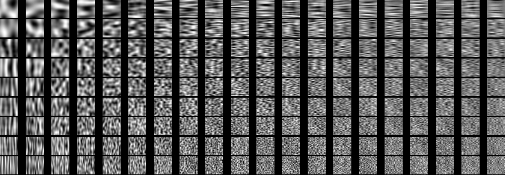
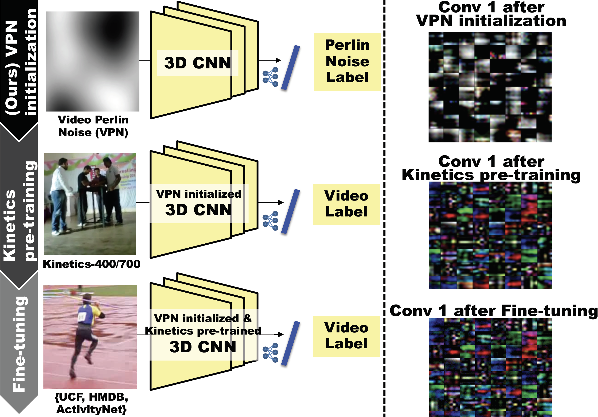
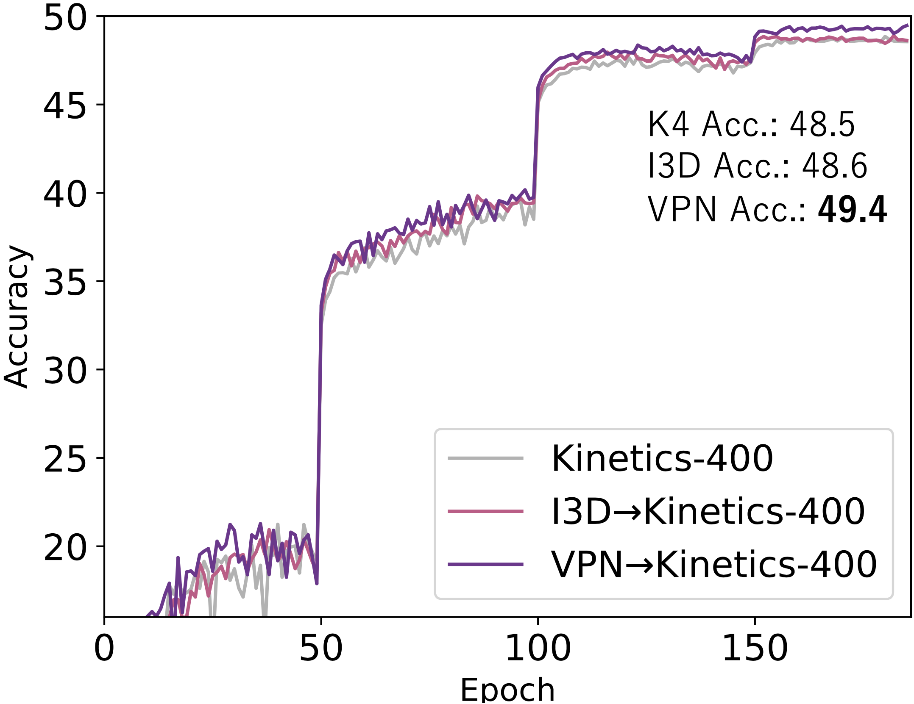
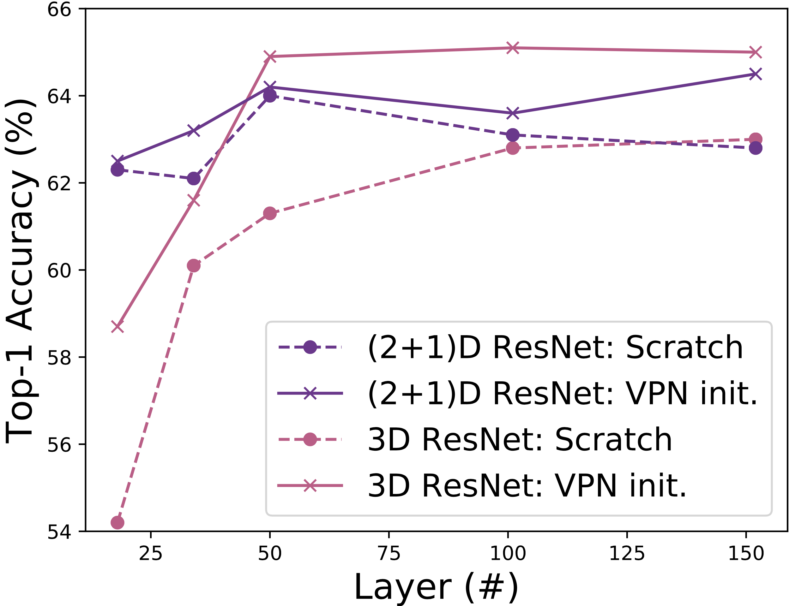
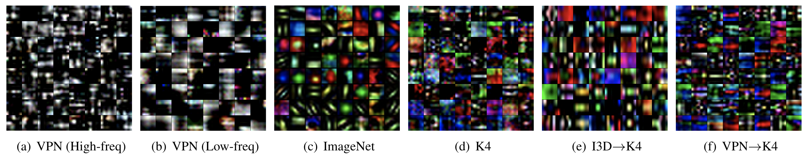

Spatiotemporal Initialization for 3D CNNs with Generated Motion Patterns
Winter Conference on Applications of Computer Vision (WACV) 2022
Hirokatsu Kataoka1 Eisuke Yamagata2 Kensho Hara1 Ryusuke Hayashi1 Nakamasa Inoue2
1: AIST 2: TITech


Abstract
The paper proposes a framework of Formula-Driven Supervised Learning (FDSL) for spatiotemporal initialization. Our FDSL approach enables to automatically and simultaneously generate motion patterns and their video labels with a simple formula which is based on Perlin noise. We designed a dataset of generated motion patterns adequate for the 3D convolutional neural networks (CNNs) to learn a better basis set of natural videos. The constructed Video Perlin Noise (VPN) dataset can be applied to initialize a model before pre-training with large-scale video datasets such as Kinetics-400/700, to enhance target task performance. Our spatiotemporal initialization with VPN dataset (VPN initialization) outperforms the previous initialization method with the inflated 3D ConvNet (I3D) using 2D ImageNet dataset. Our proposed method increased the top-1 video-level accuracy of Kinetics-400 pre-trained model on {Kinetics-400, UCF-101, HMDB-51, ActivityNet} datasets. Especially, the proposed method increased the performance rate of Kinetics-400 pre-trained model by 10.3 pt on ActivityNet. We also report that the relative performance improvements from the baseline are greater in 3D CNNs rather than other models. Our VPN initialization mainly helps to enhance the performance in spatiotemporal 3D kernels.
Formula-driven Dataset
The proposed dataset is inspired by the knowledge of FDSL. Especially, we considered that the Perlin noise must be applied to construct video dataset as the original usage of animation generation. The proper initialization using a synthetic video dataset designed to effectively learn a visual representation must be useful for spatiotemporal 3D CNNs to improve the performance of video recognition. Here, we use Perlin noise in order to generate motion patterns with minimal orientations and directions but various spatiotemporal frequencies based on a simple algorithm.
Perlin noise is capable of generating natural moving textures based on the frequency only in the x, y, and t dimensions that are complex enough to give a proper initial representation for a network to further learn the target video recognition tasks.

Framework
The flow of the proposed network training procedure (see also the following figure).
Video Perlin Noise(VPN) dataset consists of dynamic random textures determined only by frequencies in space and time dimensions. The dataset predispose a CNN to classify motion categories defined by the frequency characteristics of the noises (VPN initialization).
The feature representation through the VPN initialization and Kinetics pre-training shows a more well-organized structure and clearer modulation in spatiotemporal dimensions. In fact, the video representation with VPN->Kinetics-400 is changed from those with the simple Kinetics-400 pre-training and acquires direction selectivity.

Experimental Results
The left figure illustrates the accuracy transitions of the Kinetics-400 dataset training from scratch and training with ImageNet inflation and with our VPN initialization.
In the right figure, 3D and (2+1)D CNNs performances on Kinetics-400 recognition as function of #layer on Kinetics-400. The VPN initialization relatively enhances the performance of 3D ResNets more compared with those of (2+1)D ResNets. The accuracy gap is up to +4.5 pt.


Visualization
The figures illustrates the weight of each convolutional kernel at the first layer in 3D-ResNet-50 with various initialization and pre-training conditions. Figures (a) and (b) are convolutional filters initialized with high-freq and low-freq VPN datasets respectively. These panels indicate that the acquired weight pattern in the model trained with a low-spatial-freq VPN is coarser than those in the model trained with a high-spatial-freq VPN, as expected. In our experimental results, the low-freq VPN dataset performed well. Moreover, the three different initialization and pre-training combinations, Kinetics-400 (K4) (Figure (d)), I3D->K4 (Figure (e)), and VPN->K4 (Figure (f)) show different feature representations at the first convolutional layer. Though I3D->K4 maintains ImageNet-like feature representations (Figure (c)), our VPN->K4 inherits the K4 filters while showing a more well-organized structure and clearer modulation in both the space and time dimensions, showing similar orientation and direction selectivity as neurons in area V1.

Citation
@inproceedings{KataokaWACV2022,
author = {Kataoka, Hirokatsu and Yamagata, Eisuke and Hara, Kensho and Hayashi, Ryusuke and Inoue, Nakamasa},
title = {Spatiotemporal Initialization for 3D CNNs with Generated Motion Patterns},
journal = {Winter Conference on Applications of Computer Vision (WACV)},
year = {2022}
}
Acknowledgement
- Computational resource of AI Bridging Cloud Infrastructure (ABCI) provided by National Institute of Advanced Industrial Science and Technology (AIST) was used.